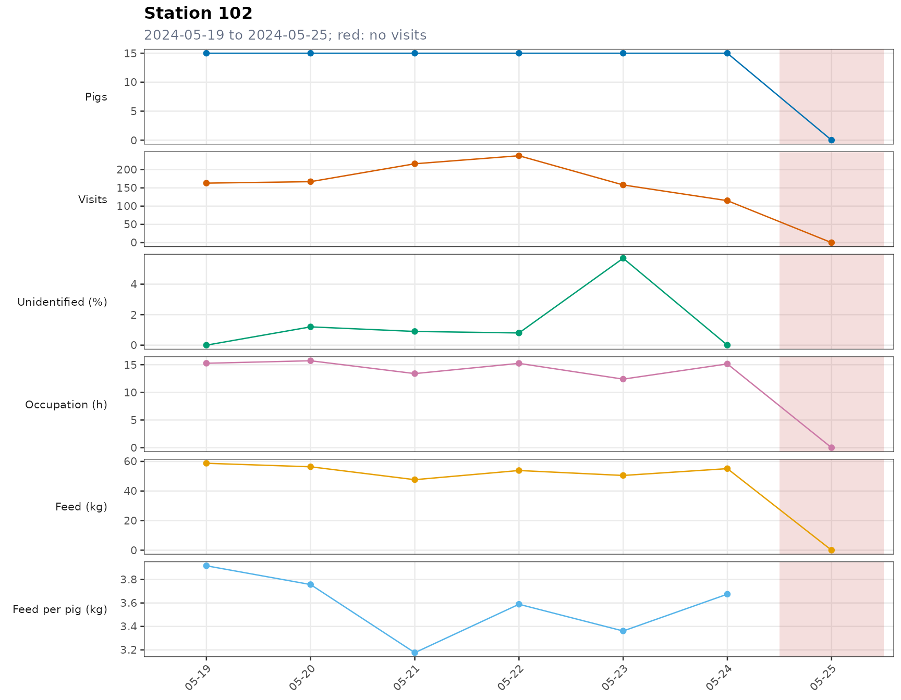
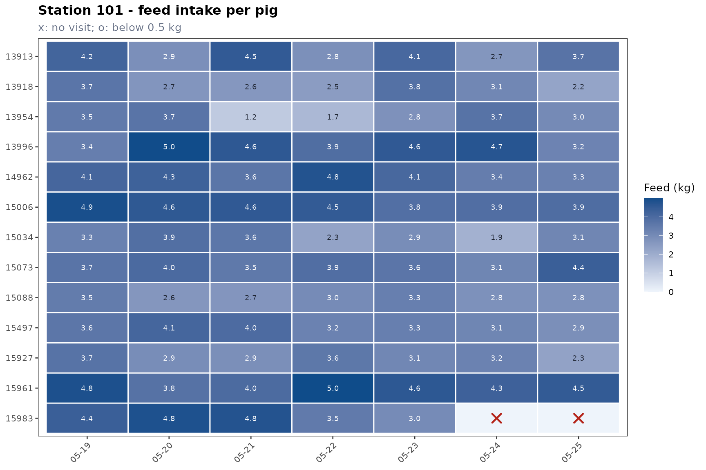

tidypptsdm 用于种猪性能测定期间的日常巡检：每天看一眼测定站（NEDAP、FIRE）的数据，回答几个问题——每台测定站都在正常记录吗？耳标读得到吗？每头猪都还在吃料吗？最近几天的采食量和体重怎么变化？
读取和预处理交给 tidypptsda；测定结束后计算 ADG、ADFI、FCR 也用 tidypptsda。tidypptsdm 只管测定期间的每日监控。
| 步骤 | 函数 | 作用 |
|---|---|---|
| 1 | run_monitor() |
读取并预处理数据，计算最近 days
天的各张日表和最后一天的警报 |
| 2 | write_monitor_report() |
写出 HTML 报告，按测定站逐页浏览 |
| 2 | write_monitor_tables() |
写出带色阶的 Excel 工作簿（或 CSV） |
| 3 | schedule_monitor() |
每天定时自动运行以上步骤 |
单独的表和图：monitor_stations()、monitor_houses()、monitor_pigs()、monitor_hours()、wide_table()、plot_monitor()、save_monitor_plots()。
所有函数都接受以下任一种输入，内部会自动调用
read_station() 和 prep_visits()：
run_monitor("D:/nedap/exports")；tidypptsda::nedap、tidypptsda::fire；read_station() 或 prep_visits()
的结果。预处理后两种测定站的列名和单位一致：采食量 g、体重 kg（0
视为未称重）、时长 s；没有读到耳标的访问保留下来，标记为
identified = FALSE；转栏的猪归到正确的测定站。函数不会修改传入的数据。
列名与默认格式不同的导出文件，用 station_format()
写一个格式文件，再传给 read_station(format = )，详见
tidypptsda 的《读取数据》。
mon <- run_monitor(tidypptsda::nedap, days = 7)
#>
#> ── Preparing NEDAP visits ──────────────────────────────────────────────────────
#> Visits read 31,863
#> └ unidentified (kept, identified = FALSE) 211 0.7%
#> └ body weight 0 (set to NA) 391 1.2%
#> ℹ No pig was seen at more than one station
#> ✔ 30 pigs at 2 stations, 31,863 visits over 97 days 0.1s
#> ℹ No breed column. To use breed in the feed intake model and breed-specific limits, add it with `add_breed()`.
#>
#> ── Monitoring NEDAP stations: 2024-05-19 to 2024-05-25 (7 days) ────────────────
#> ℹ 2 stations, 28 pigs; on 2024-05-25: 366 visits, 84.8 kg feed
#> ✔ No alerts监控窗口是截至 end_date 的 days
天（含首尾）。end_date
默认是数据中的最后一天；如果最后一天就是今天，则取昨天，因为白天导出的数据当天还不完整。也可以指定，如
end_date = "2024-05-20"。
结果是一个列表：
names(mon)
#> [1] "stations" "houses" "pigs" "pig_summary" "hours"
#> [6] "alerts" "visits" "settings"| 元素 | 内容 |
|---|---|
stations |
每台测定站每天一行：猪数、访问次数、未识别访问、占用时间、采食量、体重、体重异常值比例 |
houses |
每栋每天一行（栋 = 测定站编号的前 house_width
个字符） |
pigs |
每头猪每天一行，没有访问的日子也在，status 为
ok、low_feed 或 no_visit
|
pig_summary |
每头猪一行：窗口内的低采食天数、无访问天数、最后一天的采食量和状态等 |
hours |
最后一天每台测定站每小时一行 |
alerts |
最后一天的警报 |
visits |
窗口内的访问记录 |
settings |
参数和窗口 |
各列的含义见《结果说明》。
mon$alerts
#> Empty data.table (0 rows and 6 cols): level,type,location,responder,value,message示例数据最后一天一切正常。为了演示，去掉测定站 102 最后一天的全部记录和一头猪最后两天的记录：
v <- prep_visits(tidypptsda::nedap, verbose = 0)
end <- max(v$date)
pig <- v[location == "101" & identified, responder[3]]
spoiled <- v[!(location == "102" & date == end) & !(responder == pig & date >= end - 1)]
mon2 <- run_monitor(spoiled, days = 7)
#>
#> ── Monitoring NEDAP stations: 2024-05-19 to 2024-05-25 (7 days) ────────────────
#> ℹ 2 stations, 28 pigs; on 2024-05-25: 186 visits, 39.4 kg feed
#> ! 2 alerts: 2 danger, 0 warning
#> ✖ Station 102: No visits on 2024-05-25 (15 pigs)
#> ✖ Pig 15983 (station 101): No visit for 2 days (last weight 143.0 kg)
mon2$alerts
#> level type location responder value
#> <char> <char> <char> <char> <num>
#> 1: danger station_down 102 <NA> 0
#> 2: danger pig_no_visit 101 15983 2
#> message
#> <char>
#> 1: No visits on 2024-05-25 (15 pigs)
#> 2: No visit for 2 days (last weight 143.0 kg)| 警报 | 级别 | 条件（默认参数） |
|---|---|---|
station_down |
danger | 测定站一整天没有任何访问 |
unidentified |
warning | 未识别访问超过 max_unidentified_pct =
5%（耳标或天线问题） |
feed_drop |
warning | 测定站采食量比窗口内前几天的平均低 max_feed_drop_pct =
30% 以上 |
pig_no_visit |
danger | 窗口内出现过的猪当天没有访问 |
pig_low_feed |
warning | 猪当天采食量低于 low_feed_kg = 0.5 kg |
停机测定站上的猪不再逐头报警，由 station_down
一条警报说明（括号里是受影响的猪数）。
日表是长格式（每个单位每天一行），便于筛选和计算。wide_table()
把其中一列变成”测定站 × 日期”的宽表，和 Excel
里看到的一样；计数、kg、时间类的列加 total，其余加
mean：
wide_table(mon$stations, "feed_kg")
#> Key: <location>
#> location 05-19 05-20 05-21 05-22 05-23 05-24 05-25 total
#> <char> <num> <num> <num> <num> <num> <num> <num> <num>
#> 1: 101 50.923 49.585 46.784 44.780 47.12 44.424 42.030 325.646
#> 2: 102 58.752 56.385 47.664 53.857 50.52 55.163 42.784 365.125
wide_table(mon$pigs, "feed_kg")
#> Key: <location, responder>
#> location responder 05-19 05-20 05-21 05-22 05-23 05-24 05-25 total
#> <char> <char> <num> <num> <num> <num> <num> <num> <num> <num>
#> 1: 101 13913 4.175 2.858 4.514 2.832 4.068 2.665 3.717 24.829
#> 2: 101 13918 3.655 2.685 2.619 2.467 3.792 3.107 2.231 20.556
#> 3: 101 13954 3.505 3.681 1.168 1.664 2.796 3.738 3.015 19.567
#> 4: 101 13996 3.386 4.986 4.590 3.892 4.558 4.698 3.215 29.325
#> 5: 101 14962 4.124 4.278 3.635 4.764 4.075 3.402 3.290 27.568
#> 6: 101 15006 4.894 4.577 4.562 4.497 3.837 3.875 3.923 30.165
#> 7: 101 15034 3.294 3.850 3.612 2.264 2.937 1.878 3.135 20.970
#> 8: 101 15073 3.680 3.995 3.549 3.873 3.648 3.149 4.358 26.252
#> 9: 101 15088 3.458 2.650 2.672 2.994 3.343 2.811 2.815 20.743
#> 10: 101 15497 3.624 4.131 3.971 3.250 3.344 3.148 2.876 24.344
#> 11: 101 15927 3.739 2.937 2.867 3.581 3.118 3.250 2.305 21.797
#> 12: 101 15961 4.846 3.762 3.983 4.999 4.599 4.284 4.502 30.975
#> 13: 101 15983 4.364 4.832 4.750 3.502 2.994 4.385 2.561 27.388
#> 14: 102 13935 3.783 4.279 2.207 3.940 2.575 3.987 3.225 23.996
#> 15: 102 14260 4.488 3.790 2.989 3.132 4.760 4.014 3.035 26.208
#> 16: 102 14730 3.844 3.766 3.379 4.071 3.153 3.602 3.928 25.743
#> 17: 102 14751 2.636 3.173 2.236 2.988 2.839 3.189 1.835 18.896
#> 18: 102 14759 4.083 3.576 3.211 4.122 3.570 3.465 3.282 25.309
#> 19: 102 14903 4.611 3.506 3.795 3.617 4.132 3.535 3.128 26.324
#> 20: 102 14913 4.717 3.582 3.574 4.514 3.040 5.207 3.296 27.930
#> 21: 102 14915 3.571 3.521 2.333 3.225 3.468 2.991 1.609 20.718
#> 22: 102 14937 4.110 5.785 3.734 4.053 4.069 3.896 2.956 28.603
#> 23: 102 14969 5.269 3.881 4.175 3.288 4.418 2.935 3.631 27.597
#> 24: 102 15404 3.659 3.046 3.549 2.379 2.446 4.178 1.751 21.008
#> 25: 102 15496 3.596 4.522 4.474 4.767 3.119 4.265 4.458 29.201
#> 26: 102 15604 3.382 4.139 2.094 3.528 2.636 3.790 2.058 21.627
#> 27: 102 15626 2.869 2.849 2.721 3.019 2.534 2.209 2.590 18.791
#> 28: 102 15649 4.134 2.939 3.170 3.191 3.663 3.869 1.982 22.948
#> location responder 05-19 05-20 05-21 05-22 05-23 05-24 05-25 total
#> <char> <char> <num> <num> <num> <num> <num> <num> <num> <num>每台测定站一张图，共四种：
p <- plot_monitor(mon2, "trend", locations = "102")
p$plot[[1]]
plot_monitor(mon2, "intake", locations = "101")$plot[[1]]
"weight" 是每天体重的箱线图，"hours"
是最后一天每小时的访问、占用时间和采食量。save_monitor_plots()
按合适的尺寸保存成 PNG 或 PDF。
out <- file.path("D:/nedap/monitor", format(mon$settings$end_date))
write_monitor_report(mon, out, open = TRUE)
write_monitor_tables(mon, out)HTML 报告第一页是总览：最后一天的测定站数、猪数、访问次数、采食量、警报，以及所有测定站和栋的表格；后面每台测定站一页：警报、趋势图、采食热图、猪只表、体重和分小时图。方向键翻页，搜索框输入耳标号跳到该猪所在的测定站。文件夹可以整体拷贝或压缩，离线打开。